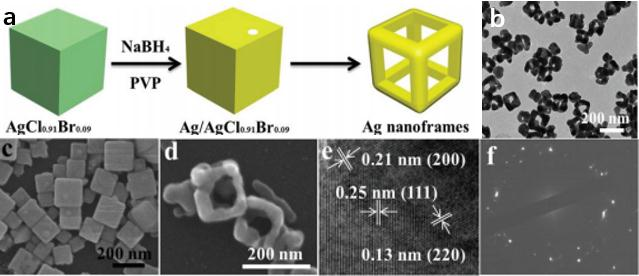
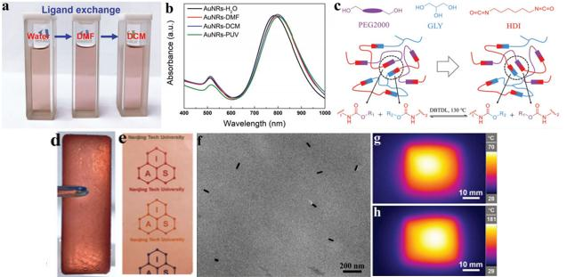
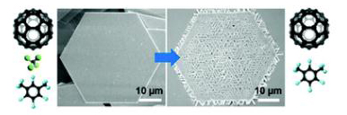
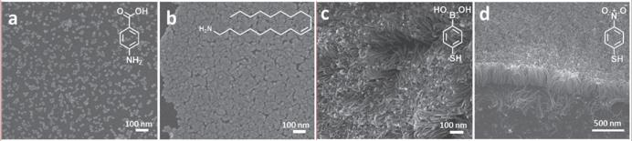
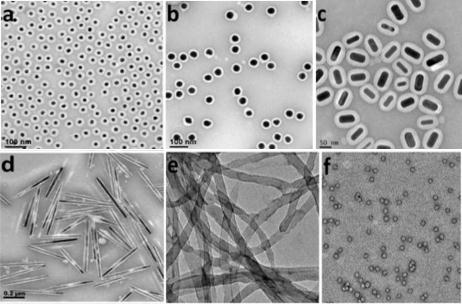
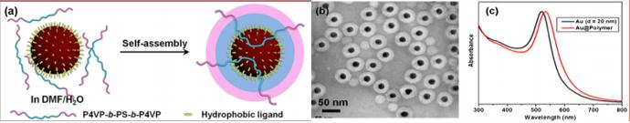
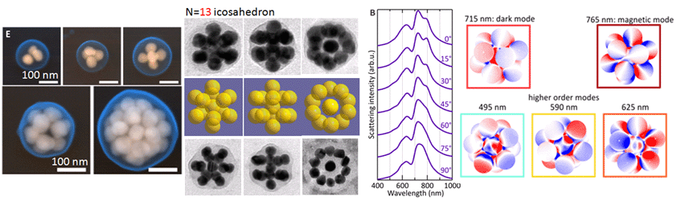
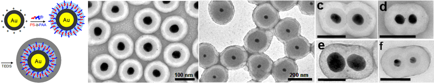
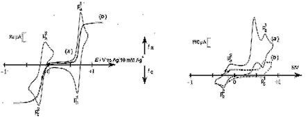

--------------------2019--------------------
115.“Ag nanoframes: controllable reduction of AgClxBr1 x nanocubes† “, Jiali Zhao, Xuejun Cheng, Gui Zhao, Yan Lu, Yawen Wang, Hong Wang * and Hongyu Chen *,
Chemical Communication
, 2019,55, 5571—5574.
link

114.“Self-Healing of Polarizing Films via the Synergy between Gold Nanorods and Vitrime”, Gui Zhao, Yusai Zhou, Jiayi Wang, Zhonghua Wu, Hong Wang,* and Hongyu Chen*,
Advanced Materials
, 2019,1900363.
link

113."On Demand Synthesis of Hollow Fullerene Nanostructures", Fei Han, Ruoxu Wang, Yuhua Feng, Shaoyan Wang, Lingmei Liu, Xinghua Li, Yu Han,and Hongyu Chen*,
Nature Communications
, 2019, 10,1548.
link
112."Two-dimensional C60 nano-meshes via crystal transformation", Yilong Lei,* Shaoyan Wang,* Zhuangchai Lai, Xin Yao, Yanli Zhao, Hua Zhang, and Hongyu Chen*,
Nanoscale
, 2019.
link

111.“Gold nanospirals on colloidal gold nanoparticles”, Beibei Yu, Qian Yang, Hongyan Li, Zhenzhong Liu, Xiao Huang, Yawen Wang*, Hongyu Chen*,
Journal of Colloid and Interface Science
, 2019, 533, 304-310.
link
--------------------2018--------------------
110.“Construction of Long Narrow Gaps in Ag Nanoplates”, Tao Jiang, Gang Chen, Xiaoli Tian, Shiwei Tang, Jun Zhou, Yuhua Feng*, and Hongyu Chen*,
Journal of the American Chemical Society
, 2018,140(46),15560-15563.
link
109.“Nanocarriers and Their Loading Strategies”, Neng Wang, Xuejun Cheng, Nan Li, Hong Wang*, Hongyu Chen*,
Advanced Healthcare Materials
, 2018, e1801002.
link
108."A general approach for encapsulating organic crystals in a polyaniline shell”, Miao Yan, Neng Wang, Bingju Zhong, Xuejun Cheng, Hong Wang*, Hongyu Chen*,
Journal of Colloid and Interface Science
, 2018, 10, (45), 21001-21005.
link
107.“Controllable oligomerization: defying step-growth kinetics in the polymerization of gold nanoparticles”, Xuejun Cheng, Gui Zhao, Yan Lu, Miao Yan, Hong Wang*, Hongyu Chen*,
Chemical Communications
, 2018, 54(56), 7746-7749.
link
106.“Transformable Masks for Colloidal Nanosynthesis”, Zhenxing Wang, Bowen He, Gefei Xu, Guojing Wang, Jiayi Wang, Yuhua Feng, Dongmeng Su, Bo Chen, Hai Li, Zhonghua Wu, Hua Zhang, Lu Shao* and Hongyu Chen*,
Nature Communications
, 2018, 9, 563.
link
105.“Twisting Ultrathin Au Nanowires into Double Helices”Yan Lu, Shenghao Yang, Jun Xu, Zhenzhong Liu, Hong Wang, Ming Li,Yawen Wang*, Hongyu Chen*,
Small
, 2018, 14(34), 1801925.
link
104.“Synthesis of Substrate-bound Au nanowires via an Active Surface Growth Mechanism”,Xinglong Wang*, Xuesong Wu*, Jiating He, Xiaolin Tao, Hongyan Li, Gui Zhao, Yawen Wang*, Hongyu Chen,
Jove- Journal of Visualized Experiments
, 2018,137, e57808.
link
--------------------2017--------------------
103.“Depletion Sphere: Explaining the Number of Ag Islands on Au Nanoparticles”,Yuhua Feng,§ Yawen Wang,‡ Xiaohui Song,‡ Shuangxi Xing,* and Hongyu Chen*,
Chemical Science
, 2017, 8(1),430-436.
link
102."Effect of Thiolated Ligands in Au Nanowire Synthesis”, Yawen Wang*, Jiating He, Suzhu Yu, Hongyu Chen*,
Small
, 2017, 13(40),1702121.
link

101.“Solution Growth of Ultralong Gold Nanohelices”, Yong Wang, Jiating He, Xiaoke Mu, Di Wang, Bowei Zhang, Youde Shen, Ming Lin,Christian Kübel, Yizhong Huang, and Hongyu Chen*,
ACS Nano
, 2017, 11,(6) 5538−5546.
link
100.“Spirals and helices by asymmetric active surface growth”, Jiating He, Yong Wang, Zhanxi Fan, Yawen Wang, Hua Zhang and Hongyu Chen*,
Nanoscale
, 2017, 9(46), 18352-18358.
link
--------------------2016--------------------
99."Dual Stimuli-Responsive Vesicular Nanospheres Fabricated by Lipopolymer Hybrids for Tumor-Targeted Photodynamic Therapy”,John Johnson V; Chung-Wook Chung; Renjith P Johnson; Young-Il Jeong; Kyu-Don Chung; Dae Hwan Kang; Hongsuk Suh; Hongyu Chen; Kim Il(*),
Biomacromolecules
, 2016,17(1),20-31.
link
98."Phospholipid End‐Capped Acid‐Degradable Polyurethane Micelles for Intracellular Delivery of Cancer Therapeutics”,Johnson V John; Reju George Thomas; Hye Ri Lee; Hongyu Chen; Yong Yeon Jeong(*); Kim Il(*),
Advanced Healthcare Materials
, 2016,5(15),1874-1883.
link
97.“Size‐Induced Switching of Nanowire Growth Direction: a New Approach Toward Kinked Nanostructures”, Youde Shen; Oleg I.Lebedev; Stuart Turner; Gustaaf Van Tendeloo; Xiaohui Song; Xuechao Yu; Qijie Wang; Hongyu Chen; Shadi A.Dayeh; Tom Wu(*),
Advanced Functional Materials
, 2016,26(21),3687-3695.
link
96."Broadening the range of vesicle formation by heating”, Songlin Liu, Cuicui Liu, Xiaohui Song, I Kim, Hongyu Chen,
Rsc Advances
, 2016,6(101),98639-98645.
link
95.“NanoScrews: Asymmetrical Etching of Silver Nanowires”, Rachel Lee Siew Tan,‡ Wen Han Chong,‡ Yuhua Feng,§ Xiaohui Song,‡ Chu Long Tham, Jun Wei*, Ming Lin*, Hongyu Chen*,
Journal of the American Chemical Society
, 2016, 138 (34), 10770–10773.
link
94."Levelling the Playing Field: Screening for Synergistic Effects in Coalesced Bimetallic Nanoparticles", Rachel Lee Siew Tan, Xiaohui Song, Bo Chen, Wen Han Chong, Yin Fang, Hua Zhang, Jun Wei,* and Hongyu Chen*, Nanoscale, 2016, 8, 3447-3453. link

93."Exploiting Rayleigh Instability in Creating Parallel Au Nanowires with Exotic Arrangements", Yawen Wang, Jiating He, Suzhu Yu, and Hongyu Chen*, Small, 2016, Vol 12, Iss 7, Pages 930-938. link
--------------------2015--------------------
92."Mesoporous Metal–Organic Frameworks with Size‐, Shape‐, and Space‐Distribution‐Controlled Pore Structure”,Weina Zhang; Yayuan Liu; Guang Lu; Yong Wang; Shaozhou Li; Chenlong Cui; Jin Wu; Zhiling Xu; Danbi Tian; Wei Huang; Joseph S.DuCheneu; W. David Wei; Hongyu Chen; Yanhui Yang; Fengwei Huo(*),
Advanced Materials
, 2015,27(18),2923-2929.
link
91. ”Ultrathin MoS2 Nanosheets Supported on N‐doped Carbon Nanoboxes with Enhanced Lithium Storage and Electrocatalytic Properties”, Xin-Yao Yu; Han Hu; Yawen Wang; Hongyu Chen; Xiong Wen Lou(*),
Angewandte Chemie International Edition
, 2015,54(25),7395-7398.
link
90."Achieving Site-Specificity in Multistep Colloidal Synthesis", Yuhua Feng, Yawen Wang, Jiating He, Xiaohui Song, Yee-Yan Tay, Huey Hoon Hng, Xing Yi Ling, and Hongyu Chen*, Journal of the American Chemical Society, 2015, 137 (24), pp 7624-7627. link
89."Thermodynamics versus Kinetics in Nanosynthesis", Yawen Wang, Jiating He, Cuicui Liu, Wen Han Chong, and Hongyu Chen*, Angewandte Chemie-International Edition, 2015, Vol 54, Iss 7, pp 2022-2051. link
88."On the Origin and Underappreciated Effects of Ion Doping in Silica", Xiaohui Song, Tao Ding, Lin Yao, Ming Lin, Rachel Lee Siew Tan, Cuicui Liu, Katarzyna Sokol, Le Yu, Xiongwen (David) Lou, and Hongyu Chen*, Small, 2015, Vol 11, Iss 34,Pages 4351-4365. link
87."Using Polystyrene-block-poly(acrylic acid)-coated Metal Nanoparticles as Monomers for Their Homo- and Co-polymerization", Yawen Wang, Xiaohui Song, Hong Wang, Hongyu Chen*, The Journal of Visualized Experiments, 2015, 9;(101):e52954. An invited paper. link

86"Substrate-bound growth of Au-Pd diblock nanowire and hybrid nanorod-plate", Jiating He, Yawen Wang, Zhanxi Fan, Zhenhui Lam, Hua Zhang, Bin Liu, Hongyu Chen*, Nanoscale, 2015, 7 (17), pp 8115-8121. link
85"Encapsulation of Au Nanoparticles by Poly(4-Vinylpyridine)-Block- Poly(4-Vinylpyridine) for Controlled Chain Assembly", Luicui Liu, Jun Xu, Hongyu Chen*, Journal of Inorganic and Organometallic Polymers and Materials, 2015, 25, pp 153-158. An invited paper. link

84"Understanding the Phase Emergence of Mesoporous Silica", Lin Yao, Cuicui Liu, Wen Han Chong, Hong Wang, Liyong Chen, and Hongyu Chen*, Small, 2015, Vol 11, Iss 2, pp 232-238. link
--------------------2014--------------------
"Chiral Gold Nanowires with Boerdijk-Coxeter-Bernal Structure", Yihan Zhu*, Jiating He, Cheng Shang, Xiaohe Miao, Jianfeng Huang, Zhipan Liu, Hongyu Chen*, and Yu Han*, Journal of the American Chemical Society, 2014, 136 (36), pp 12746-12752. link
"Homo- and Co-polymerization of Nanoparticles", Hong Wang, Xiaohui Song (co-1st author), Cuicui Liu, Jiating He, Wen Han Chong, and Hongyu Chen*, ACS Nano, 2014, 8 (8), pp 8063-8073. link
"Strategy for Nano-Catalysis in a Fixed-Bed System", Jiating He, Weijie Ji, Lin Yao, Yawen Wang, Bahareh Khezri, Richard D. Webster, and Hongyu Chen*, Advanced Materials, 2014, Vol 26, Iss 24, pp 4151-4155. link
"Bridging the Gap in the Micellar Transformation from Cylinders to Vesicles", Cuicui Liu, Lin Yao, Hong Wang, Zai Rong Phua, Xiaohui Song, and Hongyu Chen*, Small, 2014, Vol 10, Iss 7, pages 1332-1340. link

"Graphene-Based Materials for Solar Cell Applications", Zongyou Yin, Jixin Zhu, Qiyuan He, Xiehong Cao, Chaoliang Tan, Hongyu Chen, Qingyu Yan, and Hua Zhang*, Advanced Energy Materials, 2014, Vol 4, Iss 1, 1300574. link
--------------------2013--------------------
"3-D Plasmonic Nanoclusters", Alexander Urban, Xiaoshuang Shen (co-first author), Yumin Wang, Nicolas Large, Wang Hong, Mark W. Knight, Peter Nordlander*, Hongyu Chen*, and Naomi J. Halas*, Nano Letters, 2013, 13 (9), pp 4399-4403. link

"Investigating the Multiple Roles of Polyvinylpyrrolidone for A General Methodology of Oxide Encapsulation", Hang Sun, Jiating He, Jiangyan Wang, Shuangyuan Zhang, Cuicui Liu, Thirumany Sritharan, Subodh Mhaisalkar, Ming-Yong Han, Dan Wang*, and Hongyu Chen*, Journal of the American Chemical Society, 2013, 135 (24), pp 9099-9110. link
"Stirring in Suspension: Nanometer-sized Magnetic Stirbars", Wen Han Chong, Lip Ket Chin, Rachel Lee Siew Tan, Hong Wang, Ai-Qun Liu, and Hongyu Chen*, Angewandte Chemie-International Edition, 2013, Vol 52, Iss 33, pp8570-8573. Highlighted in Nature Nanotechnology, in C&E News with video; and in wiley news and nano werk. VIP, link
"Preservation of Lattice Orientation in Coalescing Imperfectly Aligned Gold Nanowires by a Zipper Mechanism", Jun Xu, Yawen Wang, Xiaoying Qi, Cuicui Liu, Jiating He, Hua Zhang, and Hongyu Chen*, Angewandte Chemie-International Edition, 2013, Vol 52, Iss 23, pages 6019-6023. link
"Density-Controlled Synthesis of Uniform ZnO Nanowires: Wide-Range Tunability and Growth Regime Transition", Dong Lai Guo, Li Huey Tan, Zhi Peng Wei, Hongyu Chen*, and Tom Wu*, Small, 2013, Vol 9, Iss 12, pages 2069-2075. link
"Exploiting Core-Shell Synergy for Nanosynthesis and Mechanistic Investigation", Hong Wang, Liyong Chen, Yuhua Feng, and Hongyu Chen*, Accounts of Chemical Research, 2013, 46 (7), pp 1636-1646. link
"Emerging Chirality in Nanoscience", Yong Wang, Jun Xu, Yawen Wang and Hongyu Chen*, Chemical Society Reviews, 2013, 42, 2930-2962. link
"Forest of Gold Nanowires: A New Type of Nanocrystal Growth", Jiating He, Yawen Wang (co-1st author), Yuhua Feng, Xiaoying Qi, Zhiyuan Zeng, Qing Liu, Wei Shan Teo, Chee Lip Gan, Hua Zhang, and Hongyu Chen*, ACS Nano, 2013, 7 (3), pp 2733-2740. link
"General Methodology of Using Oil-in-Water and Water-in-Oil Emulsions for Coiling Nanofilaments", Liyong Chen, Suzhu Yu, Hong Wang, Jun Xu, Cuicui Liu, Wen Han Chong, and Hongyu Chen*, Journal of the American Chemical Society, 2013, 135 (2), pp 835-843. link
"Functional Free-Standing Graphene Honeycomb Films", Shengyan Yin, Yulia Goldovsky, Moshe Herzberg, Lei Liu, Hang Sun, Yanyan Zhang, Fanben Meng, Xuebo Cao, Darren D. Sun, Hongyu Chen, Ariel Kushmaro1, Xiaodong Chen*, Advanced Functional Materials, 2013, Vol 23, Iss 23, pages 2972-2978. link
"Facile and efficient preparation of anisotropic DNA-functionalized gold nanoparticles and their regioselective assembly", Li Huey Tan, Hang Xing, Hongyu Chen, and Yi Lu*, Journal of the American Chemical Society, 2013, 135 (47), pp 17675-17678
. link
--------------------2012--------------------
"Induced Coiling Action: Exploring the Intrinsic Defects in Five-Fold Twinned Silver Nanowires", Liangfang Zhu, Xiaoshuang Shen, Zhiyuan Zeng, Hong Wang, Hua Zhang, and Hongyu Chen*, ACS Nano, 2012, 6 (7), pp 6033-6039. link
"Unconventional Chain-Growth Mode in the Assembly of Colloidal Au Nanoparticles", Hong Wang, Liyong Chen, Xiaoshuang Shen, Liangfang Zhu, Jiating He, and Hongyu Chen*, Angewandte Chemie-International Edition, 2012, Vol 51, Iss 32, pages 8021-8025. VIP, link, highlighted as Back Cover; highlighted by Jeffrey Pyun.
"Measuring the Unusually Slow Ionic Diffusion in Polyaniline via Study of Yolk-Shell Nanostructures", Hang Sun, Xiaoshuang Shen, Lin Yao, Shuangxi Xing, Hong Wang, Yuhua Feng, and Hongyu Chen*, Journal of the American Chemical Society, 2012, 134 (27), pp 11243-11250. link
"An Unconventional Role of Ligand in Continuously Tuning of Metal-Metal Interfacial Strain", Yuhua Feng, Jiating He, Hong Wang, Yee Yan Tay, Hang Sun, Liangfang Zhu, and Hongyu Chen*, Journal of the American Chemical Society, 2012, 134 (4), pp2004-2007. link
"Developing Mutually Encapsulating Materials for Versatile Syntheses of Multilayer Metal-Silica-Polymer Hybrid Nanostructures", Liangfang Zhu, Hong Wang, Xiaoshuang Shen, Liyong Chen, Yawen Wang, and Hongyu Chen*, Small, 2012, Vol 8, Iss 12, pp1857-1862. link

"Seeded growth of two-dimensional dendritic gold nanostructures", Ming Pan, Hang Sun, Jun Wei Lim, Saidur Rahman Bakaul, Yi Zeng, Shuangxi Xing, Tom Wu, Qingyu Yan, and Hongyu Chen*, Chemical Communications, 2012, 48, 1440-1442, Special Issue: Emerging Investigators 2012. link
"Engineering "Hot" Nanoparticles for Surface-Enhanced Raman Scattering by Embedding Reporter Molecules in Metal Layers", Yuhua Feng, Yong Wang, Hong Wang, Tao Chen, Yee Yan Tay, Lin Yao, Qingyu Yan, Shuzhou Li,* and Hongyu Chen*, Small, 2012, Vol 8, Iss 2, pp246-251. link
"Experimental and theoretical studies on pyrene-grafted polyoxometalate hybrid", Junkuo Gao, Xinfeng Liu, Yi Liu, Lingling Yu, Yuhua Feng, Hongyu Chen, Yongxin Li, Ganguly Rakesh, Cheng Hon Alfred Huan, Tze Chien Sum, Yang Zhao and Qichun Zhang*, Dalton Transactions, 2012, 41, 12185-12191. link
"The Effect of Surface Coating on Energy Migration-Mediated Upconversion", Qianqian Su, Sanyang Han, Xiaoji Xie, Haomiao Zhu, Hongyu Chen, Chih-Kai Chen, Ru-Shi Liu, Xueyuan Chen, Feng Wang*, and Xiaogang Liu*, Journal of the American Chemical Society, 2012, 134 (51), pp 20849-20857 link
--------------------2011--------------------
"Chiral Transformation: from Single Nanowire to Double Helix", Yong Wang, Qingxiao Wang, Hang Sun, Weiqing Zhang, Gang Chen, Yawen Wang, Xiaoshuang Shen, Yu Han, Xianmao Lu, and Hongyu Chen*, Journal of the American Chemical Society, 2011, 133 (50), pp 20060-20063. link
"Revisiting the Stober Method: Inhomogeneity in Silica Shells", Yi Jian Wong, Liangfang Zhu, Wei Shan Teo, Yan Wen Tan, Yanhui Yang, Chuan Wang,* and Hongyu Chen*, Journal of the American Chemical Society, 2011, 133 (30), 11422-11425. link

"Triple-Layer (Au@Perylene)@Polyaniline Nanocomposite: Unconventional Growth of Faceted Organic Nanocrystals on
Polycrystalline Au", Melinda Sindoro, Yuhua Feng, Shuangxi Xing, Hai Li, Jun Xu, Hailong Hu, Cuicui Liu, Yawen Wang, Hua Zhang, Zexiang Shen, and Hongyu Chen*, Angewandte Chemie-International Edition, 2011, Vol. 50, Iss. 42, 9898-9902. link
"Controlling Reversible Elastic Deformation of Carbon Nanotube Rings", Liyong Chen, Hong Wang, Jun Xu, Xiaoshuang Shen, Lin Yao, Liangfang Zhu, Zhiyuan Zeng, Hua Zhang, and Hongyu Chen*, Journal of the American Chemical Society, 2011, 133, 9654-9657. link
"Assembly of Colloidal Nanoparticles Directed by the Microstructures of Polycrystalline Ice", Xiaoshuang Shen, Liyong Chen, Dehui Li, Liangfang Zhu, Hong Wang, Cuicui Liu, YongWang, Qihua Xiong, and Hongyu Chen*, ACS Nano, 2011, 5 (10), 8426-8433. link
"One-step synthesis of composite vesicles: Direct polymerization and in situ over-oxidation of thiophene", Hang Sun, Jiating He, Shuangxi Xing, Liangfang Zhu, Yi Jian Wong, Yawen Wang, Hongju Zhai, and Hongyu Chen*, Chemical Science, 2011, 2, 2109-2114. link
"Toroidal Micelles of Polystyrene-block-Poly(acrylic acid)", Cuicui Liu, Gang Chen, Hang Sun, Jun Xu, Yuhua Feng, Zhou Zhang Tom Wu, and Hongyu Chen*, Small, 2011, 7, No. 19, 2721-2726. link
"Controlled Synthesis of Ag/Ag/C Hybrid Nanostructures and their Surface-Enhanced Raman Scattering Properties", Xiaojun Zhang, Ziyang Lu, Daohao Sim, Shuzhou Li, Yuhua Feng, Jan Ma, Hongyu Chen, Freddy Boey, Huey Hoon Hng*, Qingyu Yan*, Chemistry - A European Journal, 2011, Vol 17, Iss 48, pp 13386-13390. link
"A symmetry-adapted shell transformation of core-shell nanoparticles for binary nanoassembly", Shuangxi Xing,* Jiating He, Xianchun Liu and Hongyu Chen, Chemical Communications, 2011, 47, 12533-12535. link
"Direct growth of highly branched crystalline Au nanostructures on an electrode surface: their surface enhanced Raman scattering and electrocatalytic applications", Hailan Chen, Palanisamy Kannan, Longhua Guo, Hongyu Chen, and Dong-Hwan Kim*, Journal of Materials Chemistry, 2011, 21, 18271-18278. link
"Planar Macrocyclic Fluoropentamers as Supramolecular Organogelators", Changliang Ren, Shengyu Xu, Jun Xu, Hongyu Chen, and Huaqiang Zeng*, Organic Letters, 2011, Vol. 13, No. 15, 3840-3843. link
"Site-Selective Localization of Analytes on Gold Nanorod Surface for Investigating Field Enhancement Distribution in Surface-Enhanced Raman Scattering", Tao Chen,* Chaoling Du,* Li Huey Tan, Zexiang Shen, and Hongyu Chen, Nanoscale, 2011, 3, 1575-1581. link
--------------------2010--------------------
"A systems approach towards the stoichiometry-controlled hetero-assembly of nanoparticles", Yong Wang, Gang Chen, Miaoxin Yang, Georg Silber, Shuangxi Xing, Li Huey Tan, Feng Wang, Yuhua Feng, Xiaogang Liu, Shuzhou Li, and Hongyu Chen*, Nature Communications, 2010, 1, 87. link

"Mechanical Nanosprings: Induced Coiling and Uncoiling of Ultrathin Au Nanowires", Jun Xu, Hong Wang, Cuicui Liu, Yanmei Yang, Tao Chen, Yawen Wang, Feng Wang, Xiaogang Liu, Bengang Xing*, and Hongyu Chen*, Journal of the American Chemical Society, 2010, 132 (34), pp 11920-11922. link, highlighted in RSC Chemistry World, ACS Noteworthy Chemistry, and Nature Asia.
"Scalable Routes to Janus Au-SiO2 and Ternary Ag-Au-SiO2 Nanoparticles", Tao Chen, Gang Chen, Shuangxi Xing, Tom Wu, and Hongyu Chen*, Chemistry of Materials, 2010, 22(13), pp 3826-3828. link
"3D dendritic gold nanostructures: seeded growth of a multi-generation fractal architecture", Ming Pan, Shuangxi Xing, Ting Sun, Wenwen Zhou, Melinda Sindoro, Hui Hian Teo, Qingyu Yan, and Hongyu Chen*, Chemical Communications, 2010, 46, 7112-7114. Inside cover, link.
"Mechanistic Investigation in the Spontaneous Linear Assembly of Gold Nanospheres", Miaoxin Yang, Gang Chen, Yunfeng Zhao, Georg Silber, Yong Wang, Shuangxi Xing, Yu Han*, and Hongyu Chen*, Physical Chemistry Chemical Physics, 2010, 12, 11850-11860, (an invited paper to a themed issue on Supraparticle Physical Chemistry). link
"Probing the Kinetics of Short-Distance Drug Release from Nanocarriers to Nanoacceptors", Hong Wang, Jun Xu, Jinghao Wang, Tao Chen, Yong Wang, Yan Wen Tan, Haibin Su, Khai Leok Chan and Hongyu Chen*, Angewandte Chemie-International Edition, 2010, Vol 49, Iss 45, 8426-8430. link
"Reducing the Symmetry of Bimetallic Au@Ag Nanoparticles by Exploiting Eccentric Polymer Shells", Shuangxi Xing, Yuhua Feng, Yee Yan Tay, Tao Chen, Jun Xu, Ming Pan, Jiating He, Huey Hoon Hng, Qingyu Yan, and Hongyu Chen*, Journal of the American Chemical Society, 2010, 132 (28), 9537-9539. link
"Hotspot-Induced Transformation of Surface-Enhanced Raman Scattering Fingerprints", Tao Chen, Hong Wang, Gang Chen, Yong Wang, Yuhua Feng, Wei Shan Teo, Tom Wu and Hongyu Chen*, ACS Nano, 2010, 4 (6), 3087-3094, link
"Measuring Ensemble-Averaged Surface-Enhanced Raman Scattering in the Hotspots of Colloidal Nanoparticle Dimers and Trimers", Gang Chen, Yong Wang, Miaoxin Yang, Jun Xu, Sook Jin Goh, Ming Pan, and Hongyu Chen*, Journal of the American Chemical Society, 2010, 132 (11), pp 3644-3645. link
"Probing the Kinetics of Ligand Exchange on Colloidal Gold Nanoparticles by Surface-Enhanced Raman Scattering", Yuhua Feng, Shuangxi Xing, Jun Xu, Hong Wang, Jun Wei Lim, and Hongyu Chen*, Dalton Transactions, 2010, 39, 349 - 351 (an invited paper to a theme issue "showcasing the strength of research being carried out by
tomorrow's leaders in the field of inorganic chemistry"). link
"Simultaneous phase and size control of upconversion nanocrystals through lanthanide doping", Feng Wang, Yu Han, Chin Seong Lim, Yunhao Lu, Juan Wang, Jun Xu, Hongyu Chen, Chun Zhang, Minghui Hong and Xiaogang Liu*, Nature, 2010, 463, 1061 - 1065. link
"Tunable Upconversion Emissions from Lanthanide-doped Monondisperse beta-NaYF4 Nanoparticles", Feng Wang, Juan Wang, Jun Xu, Xuejia Xue, Hongyu Chen and Xiaogang Liu*, Spectroscopy Letters, 2010, Vol 43, Iss 5, 2010, pp 400-405 (Special Edition:
Spectroscopy of Lanthanide Materials II). link
"Metal-layer-assisted coalescence of Au nanoparticles and its effect on diameter control in vapor-liquid-solid growth of oxide nanowires", Dong Lai Guo, Xiao Huang, Guo Zhong Xing, Zhou Zhang, Gong Ping Li, Mi He, Hua Zhang, Hongyu Chen and Tom Wu*, Physical Review B, 2010, 83, 045403 link
"Hydrazine-hydrothermal method to synthesize three-dimensional chalcogenide framework for photocatalytic hydrogen generation", Yi Liu, Pushkar D. Kanhere, Chui Ling Wong, Yuefeng Tian, Yuhua Feng, Freddy Boey, Tom Wu, Hongyu Chen, Tim J. White, Zhong Chen and Qichun Zhang*, Journal of Solid State Chemistry, 2010, Vol 183, Iss 11, 2644-2649. link
"Lanthanide-doped LiYF4 Nanoparticles: Synthesis and Multicolor Upconversion Tuning", Juan Wang, Feng Wang, Jun Xu, Yong Wang, Yongsheng Liu, Xueyuan Chen, Hongyu Chen, Xiaogang Liu*, Comptes Rendus Chimie, 2010, 13, 731-736. link
"Generation of dual patterns of metal oxide nanomaterials based on seed-mediated selective growth", Zongyou Yin, Qiyuan He, Xiao Huang, Gang Lu, Huey Hoon Hng, Hongyu Chen, Can Xue, Qingyu Yan, Freddy Boey, Qichun Zhang, Hua Zhang*, Langmuir, 2010, 26 (7), pp 4616-4619. link
--------------------2009--------------------
"High-Purity Separation of Gold Nanoparticle Dimers and Trimers", Gang Chen, Yong Wang, Li Huey Tan, Miaoxin Yang, Lee Siew Tan, Yuan Chen and Hongyu Chen*, Journal of the American Chemical Society, 2009, 131(12), 4218-4219. link
"Fabrication of Polymer Nanocavities with Tailored Openings", Li Huey Tan, Shuangxi Xing, Tao Chen, Gang Chen, Xiao Huang, Hua Zhang and Hongyu Chen*, ACS Nano, 2009, 3 (11), 3469-3474. link, highlight.
"Facile fabrication of triple-layer (Au@Ag)@Polypyrrole core-shell and (Au@H2O)@Polypyrrole yolk-shell nanostructures", Shuangxi Xing, Li Huey Tan, Tao Chen, Yanhui Yang and Hongyu Chen*, Chemical Communications, 2009, 13, 1653-1654. link
"Highly Controlled Core/Shell Structures: Tunable Conductive Polymer Shells on Gold Nanoparticles and Nanochains", Shuangxi Xing, Li Huey Tan, Miaoxin Yang, Ming Pan, Yunbo Lv, Qinghu Tang, Yanhui Yang and Hongyu Chen*, Journal of Materials Chemistry, 2009, 19, 3286-3291. link
"Development of Polymer-Encapsulated Metal Nanoparticles as Surface-Enhanced Raman Scattering Probes", Miaoxin Yang, Tao Chen, Wei Siang Lau, Yong Wang, Qinghu Tang, Yanhui Yang and Hongyu Chen*, Small, 2009, 198-202. link, Cover Page, the winner of the 2009 Cover of the Year competition.
"Fabrication of Core/Shell Structure of M@C (M=Se, Au, Ag2Se) and Transformation to Yolk/Shell Structure by Electron Beam Irradiation or Vacuum Annealing", Jixin Zhu, Ting Sun, Huey Hoon Hng, Jan Ma, Freddy Yin Chiang Boey, Xiong wen Lou,
Hua Zhang, Can Xue, Hongyu Chen, and Qingyu Yan*, Chemistry of Materials, 2009, 21(16), 3848-3852. link
"Polymer-encapsulated silver nanoparticle monomer and dimer for surface-enhanced Raman scattering", Chaoling Du, Miaoxin Yang, Yumeng You, Tao Chen, Hongyu Chen, and Zexiang Shen*, Chemical Physics Letters, 2009, (473), 317-320. link
--------------------2008--------------------
"Self-assembled shape- and orientation- controlled synthesis of nanoscale Cu3Si triangles, squares, and wires", Zhou Zhang, Lai Mun Wong, Hock Guan Ong, Xin Jiao Wang, Jun Ling Wang, Shi Jie Wang, Hongyu Chen* and Tom Wu*, Nano Letters, 2008, 8, 3205-3210. link, Highlighted by Nature Asia
"Controlled Assembly of Eccentrically Encapsulated Gold Nanoparticles", Tao Chen, Miaoxin Yang, Xinjiao Wang, Li Huey Tan, Hongyu Chen*, Journal of the American Chemical Society, 2008, 130 (36), 11858-11859. link
"Polymer-Encapsulated Gold-Nanoparticle Dimers: Facile Preparation and Catalytical Application in Guided Growth of Dimeric ZnO-Nanowires", Xinjiao Wang; Gongping Li; Tao Chen; Miaoxin Yang; Zhou Zhang; Tom Wu* and Hongyu Chen*, Nano Letters, 2008, 8, 2643-2647. link
"Single Encapsulation of Small-Size Gold Nanoparticles by Diblock Copolymers", H. Y. Chen*, S. Abraham, J. Mendenhall, S.C. Delamarre, K. Smith, I. Kim, and C. A. Batt, ChemPhysChem, 2008, 9(3), 388-392. link
"Tailoring photoluminescence in ZnO nanowires using Au nanoparticles", Tao Chen, Guozhong Xing, Zhou Zhang, Hongyu Chen and Tom Wu*, Nanotechnology, 2008, 19, 435711.link
"Tunable wettability in surface-modified ZnO-based hierarchical nanostructures", Gongping Li, Tao Chen, Bin Yan, Yun Ma, Zhou Zhang, Ting Yu, Zexiang Shen, Hongyu Chen, and Tom Wu*, Applied Physics Letters, 2008, 92, 173104. link
--------------------2007--------------------
"Near-Infrared Fluorescence Imaging with Water-Soluble Lead Salt Quantum Dots", B. R. Hyun*, H. Y. Chen, D. A. Rey, F. W. Wise and C. A. Batt, Journal of Physical Chemistry B, 2007, 111(20), 5726-5730. link
"Homogeneous Water Oxidation by a Di-µ-Oxo Dimanganese Complex in the Presence of Ce4+", R. Tagore, H. Y. Chen, H. Zhang, R. H. Crabtree* and G. W. Brudvig*, Inorganica Chimica Acta, 2007, 360(9), 2983-2989. link
"Speciation of the Catalytic Oxygen Evolution System: [(terpy)2Mn2III/IV(µ-O)2(H2O)2](NO3)3 + HSO5-", H. Y. Chen, R. Tagore, G. Olack, J. S. Vrettos, R. H. Crabtree* and G. W. Brudvig*, Inorganic Chemistry, 2007, 46(1), 34-43. link
--------------------2006--------------------
"Determination of Ligand Exchange Rates in di-µ-oxo di-Manganese Complexes by Electrospray Ionization Mass Spectroscopy", R. Tagore, H. Y. Chen, R. H. Crabtree* and G. W. Brudvig*, Journal of the American Chemical Society, 2006, 128(29); 9457-9465. link
"A multifrequency high-field EPR (9-285 GHz) investigation of a series of dichloride mononuclear penta-coordinated Mn(II) complexes", C. Duboc*, V. Asiter-Perret, H. Y. Chen, J. Pécaut, R. H. Crabtree, G. W. Brudvig, M. N. Collomb*, Inorganic Chimica Acta, 2006, 359, 1541-1548. link
"Dendrimer-Scaffold-Based Electron-Beam Patterning of Biomolecules", P. Bhatnagar, S. S. Mark, I. Kim, H. Y. Chen, B. Schmidt, M. Lipson, C. A. Batt*, Advanced Materials, 2006; 18, 315-319. link
--------------------before 2005--------------------
"New Linear High-Valent Tetranuclear Manganese-Oxo Cluster Relevant to the Oxygen-Evolving Complex of Photosystem II with Oxo, Hydroxo, and Aqua Coordinated to a Single Mn(IV)", H. Y. Chen, M. N. Collomb, C. Duboc, G. Blondin, E. Rivière, J. W. Faller, R. H. Crabtree* and G. W. Brudvig*, Inorgic Chemistry, 2005; 44(25); 9567-9573. link
"General Synthesis of Di-µ-oxo Di-aqua Dimanganese Complexes as Functional Models for the Oxygen Evolving Complex of Photosystem II", H. Y. Chen, R. Tagore, S. Das, C. Incarvito, J. W. Faller, R. H. Crabtree* and G. W. Brudvig*, Inorganic Chemistry, 2005, 44(21); 7661-7670. link
"High-spin chloro mononuclear Mn-III complexes: A multifrequency high-field EPR study", C. Mantel, H. Y. Chen, R. H. Crabtree, G. W. Brudvig, J. Pécaut, M. N. Collomb*, Carole Duboc*, ChemPhysChem, 2005, 6(3), 541-546. link
"Dimer-of-Dimers Model for the Oxygen-Evolving Complex of Photosystem II. Synthesis and Properties of [MnIV4O5(terpy)4(H2O)2](ClO4)6", H. Y. Chen, J. W. Faller, R. H. Crabtree* and G. W. Brudvig*, Journal of the American Chemical Society, 2004, 126, 7345-7349. link Used in a textbook: Inorganic Chemistry (3rd, Ed. Housecroft and Sharpe, Pearson).
"Electrochemical properties of [MnIII(terpy)(N3)3] (terpy=2,2':6',2''-terpyridine) in CH3CN —— Electrogeneration of dimanganese(II) di-µ-azido and dimanganese(IV) di-µ-oxo complexes", C. Baffert, H. Y. Chen, R. H. Crabtree, G. W. Brudvig*, M. N. Collomb*, Journal of Electroanalytical Chemistry, 2001, 506 (2): 99-105. link

"Characterization of the O2-evolving reaction catalyzed by [(terpy)(H2O)MnIII(O)2MnIV(OH2)(terpy)](NO3)3 (terpy=2,2':6,2''-terpyridine)", J. Limburg, J. S. Vrettos, H. Y. Chen, J. C. de Paula, R. H. Crabtree*, G. W. Brudvig*, Journal of the American Chemical Society, 2001, 123 (3): 423-430. link

{kind=link}
{kind=link}